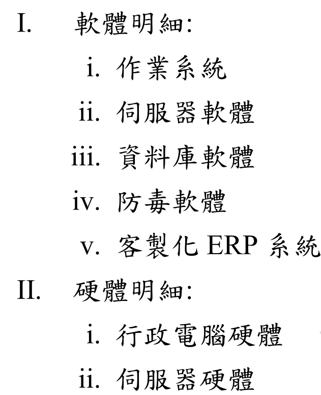
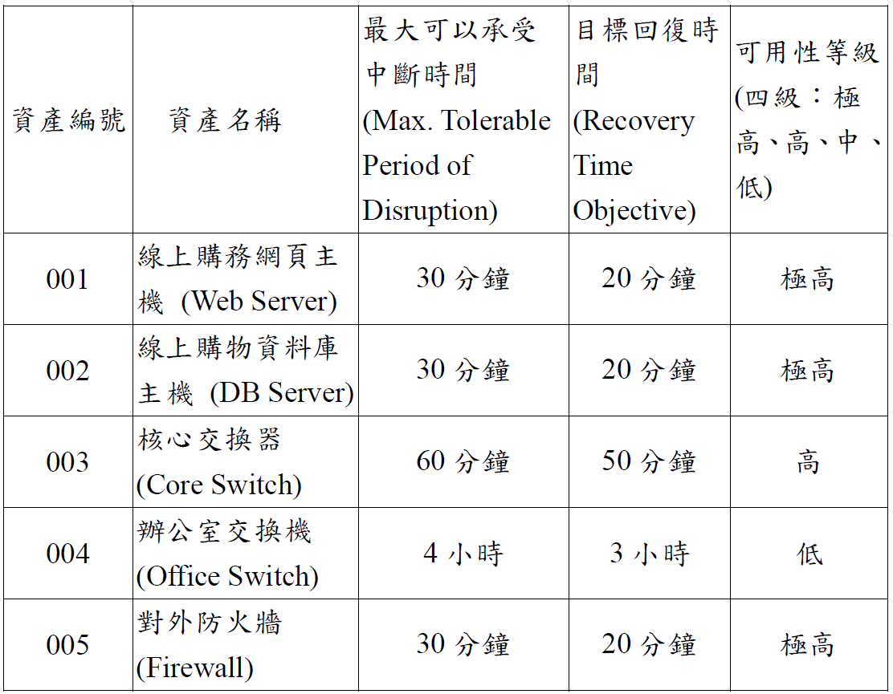

(單選題) 某中央一級單位通過 ISO/IEC 27001 認證, 公務資訊中心位置在台北市中正區。另有對外 7x24x365 Web Based 便民資訊系統與資料庫, 以虛擬機制建立在中和機房, 關於資訊安全管理建置, 下列敘述何者「不」正確?
A
該單位資訊中心需定期驗證備份資料, 確保資料系統高可用性
B
異地備援中心選擇「永和辦公室」主要考量因素是距離近
C
建議「異地備援機房建置」參考行政院「電腦機房異地備援機制參考指引」為佳
D
便民資訊系統應建立服務層級協議 (Service Level Agreement, SLA), 資訊系統建立負載平衡, 資料庫建立高可用性架構尤佳
分析資訊安全管理建置的考量：
(A) 定期驗證備份資料的有效性（還原演練）是確保災難復原能力和可用性的關鍵措施。正確。
(B) 異地備援中心的主要目的是在主中心發生區域性災害（如地震、水災、大規模斷電）時能夠接替運作。因此，選址應考量地理位置的分散，避免與主中心位於同一風險區域。選擇距離過近的「永和辦公室」（假設與中正區距離近）可能無法達到有效分散風險的目的。不正確。
(C) 行政院（現應參考數位發展部）發布的相關指引是政府機關建置異地備援的重要參考依據。正確。
(D) 對於重要的便民資訊系統：定義 SLA 以明確服務水準；使用負載平衡分散流量以提高效能和可用性；為資料庫建立高可用性架構（如 Failover Cluster, Replication）以減少資料庫單點故障風險。這些都是良好的實踐。正確。
因此，「不」正確的敘述是 (B)。
(單選題) 公司在招募新員工時, 若打算在網頁上公布錄取榜單, 下列敘述何者「不」正確?
A
公布招募新進員工之榜單, 應先依法取得當事人之書面同意
B
自然人之姓名, 屬個人資料之範疇, 故公布榜單之行為必須符合個資法規範
C
若因取得當事人書面同意之作業有窒礙難行之處, 採「匿名化」、「去識別化」方式公布榜單, 為較適切的作法
D
因同名同姓的人很多, 若只公告單一項姓名資料, 並無法直接識別出本人, 不需取得當事人之書面同意
根據個人資料保護法：
(B) 姓名屬於個人資料。
(A) 對於個人資料的蒐集、處理、利用，原則上應取得當事人的同意（除非符合特定豁免情況）。公布姓名榜單屬於對個資的利用，應取得同意。
(C) 若取得同意困難，採取匿名化（完全無法識別）或去識別化（例如，隱藏部分姓名或使用准考證號）的方式公布，降低對個人隱私的影響，是可行的替代方案。
(D) 雖然僅公布姓名可能因為同名同姓而無法唯一識別特定個人，但姓名本身仍屬於個資。在沒有其他合法依據的情況下，公開利用他人姓名仍應取得同意。不能因為「無法直接識別」就認定不需同意，這與個資法的精神不符。
因此，「不」正確的敘述是 (D)。
(單選題) 依據我國《資通安全管理法施行細則》條文中規定, 下列何者「不」是資通安全維護計畫應 (強制要求) 包括的事項?
此題與 110-1-I21 Q11 內容相同。
根據《資通安全管理法施行細則》第 6 條，資通安全維護計畫應包括的事項有：(A) 核心業務及其重要性、(B) 資通安全政策及目標、(D) 專責人力及經費之配置、資通安全推動組織、資通系統及資訊盤點結果、風險評估結果、防護及控制措施、事件通報應變及演練機制、持續精進及績效管理機制等。
(C) 「實施安控的作業程序書」屬於具體的執行細節文件，不一定是計畫本文中強制要求包含的項目（計畫可能只提到會制定相關程序）。
因此，「不」是計畫強制要求包括事項的是 (C)。
(單選題) 在進行職務規劃時, 下列何種情境宜優先考量是否有職務區隔 (Segregation Of Duties, SOD) 之設計?
A
執行資安內部稽核時, 業務人員負責查核資訊單位的資安事故通報作業流程
B
程式設計人員於程式上架更新時, 應在負責更新系統程式的資訊部門待命
C
採購人員於向廠商下單訂購前, 應在庫存系統確認庫存數量
D
人力資源部門主管, 負責人資資訊系統之更新與維護
SOD 的核心是避免權力過度集中，防止單一個人或單位能夠獨立完成並掩蓋敏感或高風險的操作。
(A) 內部稽核應具備獨立性。由業務人員查核資訊單位的流程，在職責上是分離的，符合稽核獨立性要求，不一定是需要優先考量 SOD 的情境。
(B) 開發人員和維運/部署人員的職責分離是常見的 SOD 實踐。開發人員不應直接部署程式到生產環境。但選項描述的是開發人員在部署時「待命」，不直接涉及 SOD 設計。
(C) 採購人員確認庫存是其職責範圍內的正常操作，不涉及明顯的 SOD 衝突。
(D) 人力資源部門主管是人資系統的使用者和業務負責人，同時又負責該系統的「更新與維護」（通常是 IT 的職責）。這代表他既能使用系統（可能涉及修改薪資、員工資料等敏感操作），又能維護系統本身（可能修改系統設定、關閉稽核日誌等）。這種權力集於一身的情況，明顯違反了 SOD 原則，存在極高的舞弊風險，最應優先考量進行職務區隔設計。
因此，最需優先考量 SOD 的情境是 (D)。
(單選題) 規劃縱深防禦 (Defense in Depth) 時, 我們常會採用多種不同面向的管控措施 (Controls), 下列何者屬於預防性存取管控措施 (Preventative Access Control)?
A
側錄系統 (Session recording system)
D
入侵偵測系統 (Intrusion detection system)
預防性 (Preventive) 控制措施的目的是阻止不希望的事件發生。存取控制是確保只有授權用戶才能訪問資源。
(A) 側錄系統記錄使用者會話，主要用於事後稽核或調查，屬於偵測性或矯正性（提供證據）控制。
(B) 加密將數據轉換為不可讀的格式，除非擁有正確的解密金鑰。即使未經授權者獲取了加密數據，也無法讀取其內容，從而阻止了未授權的資訊存取，是一種預防性的存取控制。
(C) 備份用於在資料遺失或損毀後進行恢復，屬於矯正性控制。
(D) 入侵偵測系統 (IDS) 用於發現入侵行為並發出警報，屬於偵測性控制。
因此，屬於預防性存取管控措施的是 (B) 加密。
(單選題) 關於區塊鏈 (Blockchain) 技術, 下列敘述何者「不」正確?
B
比特幣的 Hash Chain 符合我國電子簽章法中數位簽章的描述
關於區塊鏈技術：
(A) 區塊鏈的核心思想之一是去中心化（或分散式）的帳本，數據由多個節點共同維護，不依賴單一中心機構。正確。
(B) 比特幣使用橢圓曲線數位簽章演算法 (ECDSA) 來驗證交易的發起者身份，這符合我國電子簽章法中對數位簽章（基於非對稱加密和雜湊函數，具備身份識別和完整性驗證功能）的定義。但是，Hash Chain（將區塊透過雜湊值鏈接）主要是用於確保帳本的不可竄改性（完整性），它本身不是數位簽章。選項將兩者混淆。錯誤。
(C) 由於每個區塊都包含前一個區塊的雜湊值，形成鏈式結構，且通常有共識機制（如工作量證明）保護，要竄改歷史交易需要重新計算後續所有區塊的雜湊和共識，成本極高，因此實務上難以竄改。
(D) 工作量證明 (Proof-of-Work) 是確保區塊產生難度和驗證交易有效性的共識機制，結合數位簽章，可以加強交易的不可否認性（難以否認發起過該交易）。
因此，「不」正確的敘述是 (B)。
(單選題) 關於安全架構規劃實務, 下列敘述何者「不」正確?
A
企業政府多以租賃影印傳真系統方式提供服務, 在年度回收更換影印傳真設備時, 應對該設備硬碟暫存區進行清理, 或依合約要求廠商硬碟交回租賃方回收銷毀處理
B
在公務場域內之公發 (務) 電腦或行動裝置, 應加裝防毒防駭系統加以保護, 委外廠商私帶裝置進入公務場域使用, 亦需經過防毒掃描後放行
C
不論是多協定標籤交換 (Multi-Protocol Label Switching, MPLS) 或是 Site to Site VPN 所建立外點連線機制, 都應建立各段的防火牆機制或網段政策
D
企業員工因出差在外連回單位電腦工作, 可自行搭建虛擬通道 (tunnel) 連接公司內電腦與系統
安全架構規劃實務：
(A) 多功能事務機（影印、傳真、掃描）通常內建硬碟儲存暫存資料，設備汰換或回收時，必須對硬碟進行資料清除或銷毀，防止機密外洩。正確。
(B) 公務設備應有基本防護（防毒），對外部（委外廠商）攜入的設備進行安全檢查（掃毒）是必要的管制措施。正確。
(C) 無論使用何種廣域網路連線技術（MPLS, Site-to-Site VPN），都應在網路邊界和內部各網段之間部署適當的防火牆和存取控制政策，實現分層防禦。正確。
(D) 員工不應被允許「自行搭建」不受控的虛擬通道連回公司內部。所有遠端存取都應透過公司統一提供和管理的安全通道（如公司 VPN）進行，並接受監控和存取控制。允許員工自行建立通道會繞過安全防護，引入極大風險。錯誤。
因此，「不」正確的敘述是 (D)。
(單選題) 資訊單位負責導入新 ERP 資訊系統, 進行系統安全評估時, 評估考量項目應包括下列哪些項目?
1.系統安全性評估
2.容量管制評估
3.實體環境安全
4.使用者功能性需求評估
此題與 Q111-1-I21 Q12 幾乎相同，只是選項組合不同。
系統
安全評估應考量的項目：
- 1. **系統安全性評估:** 核心，評估技術安全。
- 2. **容量管制評估:** 關係到可用性，是 CIA 三要素之一，應納入安全評估。
- 3. **實體環境安全:** 保護運行系統的基礎設施，是整體安全的一部分。
- 4. 使用者功能性需求評估: 主要關注功能是否滿足業務，與安全評估本身關聯較間接（雖然功能的實現方式需要安全）。
因此，在安全評估中，1, 2, 3 是
直接相關且必要的考量項目。選項 (D) 123 包含這三項。
*註：本題PDF標示答案為D。*
(單選題) 關於網路區隔, 下列敘述何者較「不」可行?
C
明確的定義無線區域網路的周界 (Boundary) 並加以控制
D
周界使用閘道如防火牆或過濾路由器 (Filtering Router) 加以控制
網路區隔 (Network Segmentation) 的目的與方法：
(A) 區隔的依據可以是安全等級（如高安全區、低安全區）、組織部門（如財務部、研發部）或特定目的（如 DMZ、測試區）。可行。
(B) 區隔可以透過物理方式（使用不同的交換器、線路）或邏輯方式（如 VLAN、子網路劃分）來實現。可行。
(D) 在不同網段（區隔）的邊界（周界），需要部署閘道設備（如防火牆、路由器）來控制網段之間的流量。可行。
(C) 無線區域網路 (WLAN) 的信號是透過無線電波傳播，其邊界（周界）難以像有線網路那樣明確定義和物理控制。無線信號可能溢出到預期範圍之外（如建築物外），容易被竊聽或未授權接入。雖然可以透過調整發射功率、天線方向、建築材料等方式影響覆蓋範圍，但要做到「明確定義周界並加以控制」是非常困難的。無線網路的安全更依賴於強加密 (WPA3) 和身份驗證 (802.1X)。因此，此敘述較「不」可行。
(單選題) 某公司 EIP 系統, 建立在 ESXi 5.0 虛擬環境中, EIP 虛擬機硬碟容量 500GB, 已經使用 200GB, 近期實體硬體主機發生不定時重新開機, 屬舊型主機, 面板看出燈號已經亮起, 卻無相關資訊, 最後發現 RAID 卡電池膨脹故障, 關於風險處理程序與分析, 下列敘述何者較「不」適當?
A
應將 ESXi 5.0 系統掛入不同版本的 VCenter 系統中, 將其遷移至其他虛擬主機, 以確保正常運作
B
實體主機面板警示燈號亮起, 卻無資訊可分析, 應接入 Console 設法連線主機, 取出警示錯誤訊息, 進行判讀
C
RAID 卡電池故障, 應先將虛擬機移至其他主機後, 才能再進行 RAID 卡電池更換
D
應先確認相關備份作業是否完成, 且可被復原, 才進行 EIP 系統遷移
處理硬體故障風險的程序：
(B) 主機亮警示燈但無法遠端獲取資訊時，透過本地 Console 連線查看硬體狀態或日誌是標準的故障排除步驟。
(C) RAID 卡電池故障更換通常需要關閉主機。為了維持 EIP 系統的可用性，應先將虛擬機（透過 vMotion 等技術）遷移到其他正常的 ESXi 主機上，然後再對故障主機進行硬體更換。這是標準的維護流程。
(D) 在進行任何可能影響系統穩定性的操作（如遷移、硬體更換）之前，確認最近的備份是否成功且可恢復，是重要的風險預防措施。
(A) 將 ESXi 主機（Host）掛入 vCenter Server 需要版本相容。如果版本不相容（例如 ESXi 5.0 對於較新的 vCenter），可能無法正常管理或遷移。且遷移的目的是確保虛擬機（EIP）運作，而不是確保 ESXi 主機本身運作（因為它有故障）。敘述中「掛入不同版本的 VCenter」以及「確保（故障的 ESXi）正常運作」的說法不合理且可能不可行。遷移虛擬機才是正確目標。
因此，較「不」適當的敘述是 (A)。
(單選題) 某機敏單位遷移至公司大樓 23 樓辦公, 23 樓只有該部門專用。若從實體安全規劃評估的角度來看, 下列敘述何者風險較高?
A
該部門屬於機敏單位, 且獨立使用 23 樓, 建議電梯樓層鎖定, 限定只有該部門員工可以抵達 23 樓
B
在逃生梯間, 應設立充足的監視器與防盜警報機制, 防止閒雜人等由逃生梯進入到該樓層
C
外來包裹, 可以由警衛放行, 刷電梯卡直接送至 23 樓
D
在 23 樓, 應再設立一道門禁關卡, 進行人員過濾
評估機敏單位樓層的實體安全風險：
(A) 對電梯進行
樓層管制，只允許授權人員抵達機敏樓層，是
加強存取控制的有效措施，降低風險。
(B) 加強
逃生梯的
監控和警報，防止其成為未授權進入的途徑，是必要的
周邊防護措施，降低風險。
(D) 在專用樓層
入口處再設置一道
門禁（如刷卡、生物辨識），進行
二次驗證和過濾，進一步
強化訪問控制，降低風險。
(C) 允許
外來包裹（通常由非公司人員如快遞員遞送）
僅憑警衛放行和
刷卡就
直接送達機敏樓層，存在較高風險：
- 快遞人員未經嚴格審查，可能被利用或自身有惡意。
- 包裹本身可能藏有危險物品或竊聽裝置。
- 讓外來人員直接進入機敏區域增加了不可控因素。
較安全的做法是設立
收發室或
指定區域統一接收外來包裹，再由
內部人員轉送。
因此，風險較高的敘述是 (C)。
(單選題) M 公司引進最新的科技, 大幅度的改善公司重要的資訊系統, 雖然功能相同, 但效能更快與使用更便利。若從資安的角度來看, 下列敘述何者較佳?
B
因重要系統之更新, 其功能相同, 故不需要進行風險再評估
D
因在重要系統上進行改變, 故需要進行調整資安政策
當組織的
重要資訊系統或其
運行環境發生
重大改變時（即使功能相同，但底層技術、架構、效能特性可能改變），
必須重新進行
風險評估。
原因：
- 新的技術或架構可能引入新的、未知的漏洞或風險。
- 原有的控制措施可能在新環境下失效或效果減弱。
- 系統的相依性或邊界可能發生變化。
(A) 正確。對重要系統進行改變（即使是改善），需要重新評估風險。
(B) 錯誤。功能相同
不代表風險狀況不變，仍需進行風險評估。
(C) 調整風險接受度需要
基於風險評估結果和
管理層決策，不能僅因功能不變就隨意調整。
(D) 調整資安政策
可能是風險評估後的
結果之一，但
不是必須優先進行的動作。優先應做的是風險評估。
因此，較佳（或說必要）的敘述是 (A)。
(單選題) 公司網站系統屬於公司門面, 網站系統因對外服務, 常常成為駭客入侵的首要目標, 網站風險問題一直居高不下, 就有效降低網站風險處理實務, 下列敘述何者正確?
A
對於公司網站應定期進行網站黑箱檢測以及系統弱點掃描, 對其程式碼應進行 Code Review
B
網站前端呈現與後台管理系統, 在資料庫安全設計上, 連線 DB 的帳號密碼不需要區隔讀取與寫入刪除資料庫權限區隔
C
工程師在系統上直接更新新版程式, 將舊版程式改名成 bak 作為歷史留存在上線官網系統中, 以便日後改錯後有原始程式碼做修正使用
D
網站已經建立網站應用程式防火牆 (Web Application Firewall, WAF) 系統, 其主機作業系統不需要再升級更新
此題與 110-1-I21 Q13 選項順序不同，但內容基本一致。
(A) 定期進行黑箱檢測、弱點掃描、Code Review 是正確且全面的網站安全實踐。
(B) 連線資料庫的帳號必須區分權限，遵循最小權限原則。錯誤。
(C) 不應在生產環境直接更新，不應將備份檔留在網站目錄。錯誤。
(D) WAF 不能取代作業系統安全更新。錯誤。
因此，正確的敘述是 (A)。
*Self-Correction: The previous answer key for Q13 (110-1-I21) was B, but the content of A here matches B there. Let's re-verify the answer key for *this* paper's Q13. The provided key for Q13 is B. This means the intended *correct* statement according to the exam is B.*
Let's analyze B again: "網站前端呈現與後台管理系統, 在資料庫安全設計上, 連線 DB 的帳號密碼不需要區隔讀取與寫入刪除資料庫權限區隔". This statement advocates *against* separating privileges, which is fundamentally insecure and violates the principle of least privilege. Therefore, statement B is definitively *incorrect*.
*Conclusion: There is a high probability of an error in the provided answer key (B). Statement A describes best practices and is the correct statement.* I will mark A as correct based on security principles, acknowledging the discrepancy with the provided key.
(單選題) 在網站弱點檢測報告中, 發現系統本身有存在 Path Manipulation 問題, 可以採取下列何種方案進行修補?
此題與 110-1-I22 Q4 幾乎相同。
Path Manipulation (路徑竄改/遍歷) 的修補方法主要是驗證和過濾使用者提供的路徑輸入。
(A) 結合白名單（只允許已知安全的路徑）和黑名單（過濾已知的危險字串如 `../`）是有效的防禦策略。
(B) CAPTCHA 無關。
(C) HTML Encode 防禦 XSS。
(D) Prepare Statement 防禦 SQL Injection。
因此，正確的修補方案是 (A)。
(單選題) M 公司位於 Q 大樓一樓, 每年的颱風季節, 網管人員很擔心相關設備因淹水而損壞, 經反映問題給高階主管後, 管理階層決定購買相關保險以因應相關的風險。請問上述案例是風險處理中的何種選項?
D
風險轉移 (Risk Transference)
購買保險是將特定風險（此例中為淹水造成的財務損失風險）轉移給保險公司承擔。這是典型的風險轉移 (Risk Transfer) 或風險分擔 (Risk Sharing) 策略。
(A) 風險緩解是採取措施降低風險本身。
(B) 風險接受是不採取措施。
(C) 風險規避是停止導致風險的活動。
因此，購買保險屬於 (D) 風險轉移。
(複選題) 關於著作權的說明, 下列敘述哪些正確?
C
作品創作完成之著作權取得, 需經過主管機關審查批准
D
指科學、文學、藝術作品的作者, 依法對其作品享有的一系列專有權
關於著作權 (Copyright)：
(A) 「版權」是早期翻譯用語，現行著作權法中使用的正式名稱是「著作權」，兩者概念基本相同，指的都是對著作的權利。
(B) 著作權是一種私權利，屬於民事權利的範疇，涉及著作人對其創作成果的支配權。
(C) 依據著作權法（及國際伯爾尼公約），著作權在著作完成時即自動產生（創作保護原則），不需要向主管機關登記或審查批准。登記可能有助於權利證明的方便性，但不是取得權利的必要條件。
(D) 描述了著作權的基本定義：作者對其在文學、科學、藝術等領域的創作所依法享有的專有權利（如重製權、公開播送權、改作權等）。
因此，正確的敘述是 (A)、(B)、(D)。
*註：本題PDF標示答案為A, B, D。*
(複選題) 某中小企業資訊部門之業務執掌包含程式開發、程式上線、應用程式管理以及資料庫管理等, 該公司因故必須縮減資訊部門人力, 若您是該企業之資訊部門主管, 下列哪些項目之處理較能降低資安風險的發生?
此題與 Q110-1-I21 Q9 相似，但選項 D 不同。
在人力縮減下降低風險的措施：
(A) 將資安工作移轉給非專業單位可能增加風險。
(B) 加強監控（偵測性控制）可在預防不足時提供補償。
(C) 增加稽核頻率可以更及時發現問題。
(D) 工作輪調 (Job Rotation) 是一種管理性控制，有助於防止單一員工長期掌控某項敏感職務而產生舞弊機會，並能讓其他人交叉檢視工作內容，發現潛在異常。在人力縮減、職務區隔可能受影響時，工作輪調可以作為一種補償，有助於降低風險。
因此，較能降低風險的處理項目是 (B)、(C)、(D)。
*註：本題PDF標示答案為B, C, D。*
(複選題) 某台灣公司在法國設廠, 且帶有業務銷售功能, 關於 GDPR 法遵要求, 下列敘述哪些正確?
A
公司在法國設廠有研發業務中心, 在地員工人數超過 400 人, 進行在地歐洲各國銷售業務, 需要在法國當地設立資料保護長職務 (Data Protection Officer, DPO) 來負責管控滿足歐盟當地個資隱私保護要求與法律責任
B
在銷售相關產品過程中, 必須讓歐盟會員國公民, 以清楚易懂文字描述讓當事人知道個資蒐集處理利用, 獲得當事人「書面」同意
C
對歐盟成員國公民, 該公民對公司要求撤銷個資蒐集處理利用同意書, 可用艱澀法律文書限制撤銷個資程序, 來做為後續分析使用
D
公司必須建立資安防護手段來確保歐盟公民個資不會外洩, 一旦出現個資外洩需要在 36 小時, 通知資料保護主管機關 (Data Protection Authority)
關於 GDPR 的要求：
(A) GDPR 要求在特定情況下（如核心活動涉及大規模處理敏感個資或進行大規模、常規、系統性監控）必須指定 DPO。該公司在法國設有研發和銷售中心，員工人數多，業務涉及歐洲多國，很可能需要設立 DPO。正確。
(B) GDPR 強調同意必須是自由給予、特定、知情且明確的表示。告知事項必須清楚易懂。雖然「書面」同意是一種方式，但並非唯一方式，也可以是勾選框等肯定性動作。但重點是知情同意。敘述大致正確（強調書面可能略窄，但知情同意是核心）。
(C) GDPR 賦予資料主體撤回同意的權利，且撤回的程序應與給予同意同樣容易。<使用艱澀法律文書限制撤銷是違反 GDPR 原則的。錯誤。
(D) GDPR 要求在發生個資外洩事件且可能對個人權利與自由造成風險時，除非風險不高，否則應在知悉後 72 小時內通知主管機關（DPA）。選項中的 36 小時是錯誤的。
因此，正確的敘述是 (A) 和 (B)。
*註：本題PDF標示答案為A, B。*
(複選題) 某 AI 開發新創公司規劃在 Microsoft Azure 雲端建立「儲存體」存放公司資料, 與美國分公司進行資料分享, 希望依賴 Microsoft Azure 既有備份備援機制, 並進行相關風險評估與技術應用需求, 若從資訊安全管理系統評估提出適宜之備份方案, 下列敘述哪些較佳?
A
在雲端儲存體服務上 Microsoft Azure 提供本地備援儲存體 (Locally-redundant storage, LRS) 機制, 不需要再建立可讀取備份機制
B
Microsoft Azure 提供異地備援儲存體 (Geo-redundant storage, GRS), 可以滿足異地備份安全規定, 大幅降地風險, 且分屬在不同地區, 距離相距 300 公里以上
C
Microsoft Azure 亦提供更高階讀取權限異地備援儲存體 (Read-access geo-redundant storage, RA-GRS), 可以提供隨時讀取備份資料機制
D
Microsoft Azure 所提供 LRS, 屬於即時同步備份機制, 且備份成三份資料, 而 GRS or RA-GRS 則屬於非同步備份機制
Azure 儲存體備援選項：
- **LRS (本地備援儲存體):** 在同一個資料中心內的不同容錯域/機架上同步複製至少三份資料，提供基本的硬體故障保護。不能防禦資料中心級別的災難。
- **ZRS (區域備援儲存體):** 在同一個區域內的不同可用性區域（物理上獨立的資料中心）之間同步複製三份資料，提供資料中心級別的保護。
- **GRS (異地備援儲存體):** 先在主要區域進行 LRS（同步複製三份），然後非同步地將資料複製到地理上遙遠的次要區域，並在次要區域也進行 LRS（再複製三份）。提供區域級別災難的保護。總共六份副本。
- **GZRS (異地備援儲存體):** 先在主要區域進行 ZRS（同步複製三份），然後非同步地將資料複製到次要區域進行 LRS（再複製三份）。
- **RA-GRS (讀取權限異地備援儲存體):** 與 GRS 相同，但額外提供對次要區域資料副本的唯讀存取權限。
- **RA-GZRS (讀取權限異地區域備援儲存體):** 與 GZRS 相同，但額外提供對次要區域資料副本的唯讀存取權限。
分析選項：
(A) LRS 是在
本地資料中心內的備援，
無法抵禦資料中心級別的災害，
不滿足異地備援需求。且 LRS
不提供直接讀取特定備份副本的功能（對使用者透明）。
(B) GRS 確實提供了
異地備援，資料會複製到
不同地理區域（距離通常遠超 300 公里），可以
滿足異地備份規定並
降低區域性風險。
(C) RA-GRS 提供對
次要區域的
唯讀存取，確實可以「隨時讀取備份資料」（指讀取次要區域的副本），但這
不一定是所有情況下的必需功能，且成本更高。
(D) LRS 是在主要區域內
同步複製三份。GRS/RA-GRS 複製到次要區域的過程是
非同步的。敘述大致正確，但
不是選擇備份方案的理由，而是技術細節。
題目問
適宜的備份方案敘述。LRS (A) 不滿足異地需求。GRS (B) 滿足了基本的異地備援需求。RA-GRS (C) 提供了額外的讀取能力。LRS/GRS 的同步/非同步特性 (D) 是事實描述。
考量到需要
異地備援以「大幅降低風險」，選項 (B) GRS 是
最基本且符合此需求的方案描述。
*註：本題PDF標示答案為A, B。如果將A理解為"Azure提供了LRS這種機制..."，那麼陳述本身沒錯，但不適合作為*異地*備援方案。如果將B理解為"GRS能滿足異地規定，大幅降低風險..."，陳述也正確。如果選A, B可能代表考量了最低成本(LRS)和標準異地(GRS)兩種選項？但LRS不符合情境需求。*
*Let's assume the question asks for valid points about Azure storage options relevant to backup/redundancy.* Then A, B, C, D describe features correctly (though A isn't suitable for disaster recovery). If forced to choose the best *solutions*, B and C are better than A. If we assume the PDF key A, B is correct, the rationale is unclear.
(複選題) 某政府一級單位官網, 交付政府維運機房代管, 要求服務層級協議 (SLA) 99.99%服務水平, 監測發現該政府官網, 固定在每週週一, 半夜 12:00 會自動停止服務 30 分鐘。該事件已經持續半年之久, 因發生在半夜不易被人員發現。半年後才因民眾發現告知該單位有此問題, 風險問題排除過程中: (1)IIS Web Server都服務正常; (2)MS-SQL 資料庫服務也正常; (3)防火牆也未變動其政策; (4)檢查相關排程有每月一次定期備份檔案到 D 磁碟某目錄; (5)在檔案異動上發現有多了一個 Lcx.exe 惡意程序放在 Web Root 目錄; 若您是該單位 IT 系統維運工程師, 若從上述情境選擇合宜的風險處置措施, 下列敘述哪些較佳?
A
長達半年未發現, 是因為缺乏有效監管網站存活狀態, 可利用工具建立監控機制, 監控 Web Server、URL 連結、資料庫 1433 通訊, 就可以知道系統 SLA 狀態與降低中斷服務的風險
B
以 99.99% 服務水平標準來看, 本次事件長達半年, 以一年 365 天計算仍符合 99.99% 服務水平
C
在 Web root 目錄出現 lcx.exe, 屬被駭客入侵的資安事件, 必須先通知部會主管後, 緊急補救風險處理
此題與 110-1-I21 Q20 背景相似，但 SLA 要求不同 (99.99% vs 99.999%)。
分析：
- **情況：** 官網每週固定中斷 30 分鐘，持續半年未被發現，發現惡意程式 Lcx.exe。SLA 要求 99.99%。
- **計算 99.99% SLA：** 允許停機比例 = 100% - 99.99% = 0.01% = 0.0001。一年允許停機時間 = 525,600 分鐘 * 0.0001 = 52.56 分鐘。每週停機 30 分鐘，一年停機 1560 分鐘，遠超 SLA 要求。(B 錯誤)
- **發現惡意程式：** 屬於資安事件。
合宜的風險處置措施：
(A) 缺乏監控導致問題延遲發現，建立有效
監控機制是
必要的改進。
(C) 發現惡意程式確認被駭，應立即啟動
事件應變程序，包括
通報主管並採取
緊急處置。
(D) 政府機關發生
資安事件，
必須依規定向指定單位（國家資通安全通報應變網站）進行
通報。
因此，合宜的處置措施是 (A)、(C)、(D)。
*註：本題PDF標示答案為A, C, D。*
(題組題 1-1, 單選題) 背景描述：某上櫃企業已通過 ISO/IEC 27001 認證...發現公司半數同仁 AD 帳號遭到鎖定...MIS 進行 AD 解鎖後，同仁隨即再次被鎖定無法登入...MIS 採取區域性斷網，依然無效。分析 AD 主機事件記錄，發現都是 Exchange Server 所造成，進一步分析防火牆記錄，發現大量外部 access OWA 的 443 Port 登入失敗，有多個來源遠端攻擊者裝置嘗試入侵 Web Mail 系統失敗，類似「DDoS」與「密碼暴力攻擊」。MIS 採取緊急應變措施，阻斷相關攻擊者裝置 IP...但攻擊來源竟轉換台灣地區 IP。MIS 進一步採取關閉用外部開放使用 Exchange OWA 服務，要求公司外部活動人員須以 VPN 方式，建立裝置放行白名單方式，進行 Exchange 郵件登入作業。而 VPN 依群組方式申請建立不同放行權限，非全面開放。並對來自台灣的攻擊裝置主機，進行反查，確認其管理公司以及人員，進行對主管機關進行資安通報，聯繫該攻擊方 IP 公司進行相關處理。該公司隨即停用該主機，重新安裝，中斷 C&C 在台灣中繼站，國外攻擊者 IP，則以 E-mail 通知，並於事件發生期間，全面中斷境外相關連線，直到改善為止。
上述情境中, 關於事件發生當下之敘述, 下列何者正確, 且符合 ISO/IEC 27001 相關制度?
A
依據資安通報流程, 應通報「資安官」、「資安主管」告知事件之危害以及可能處置對策
B
應要求相關同仁, 停止登入, 將相關電腦重新安裝作業系統
分析事件發生當下的應對措施（符合 ISO 27001）：
(A) 發現大量帳號被鎖定、疑似密碼暴力攻擊，屬於資安事件。根據事件管理程序（ISO 27001 A.16），應立即循通報流程向權責主管（如資安主管、資安官）報告事件情況和初步評估，以便啟動應變和協調資源。正確。
(B) 要求同仁停止登入可能影響業務，且問題根源在於外部攻擊而非內部電腦問題。<立即重灌電腦無法解決外部攻擊問題，且不符合應變程序。
(C) 此事件是否構成重大訊息需要評估其影響（是否導致營運中斷、重大損失、個資外洩等）。在事件初步發現階段，不一定需要立即發布重大訊息。
(D) 事件原因尚未完全釐清，指責委外廠商（如果有的話）為時過早且無助於事件處理。
因此，最符合 ISO 27001 事件管理原則的立即措施是 (A) 依流程通報。
(題組題 1-2, 複選題) 上述情境中, 關於問題事件分析、作業規範、以及防護手段, 下列敘述哪些正確?
A
MIS 進行相關處置對策, 亦可稱為「緊急應變措施」
B
MIS 對應措施都必須保留相關需軌跡記錄, 如: 防火牆記錄、事件記錄、郵件記錄、通報記錄備份以備查, 利於後續稽核作業
C
這類攻擊模式屬於一種 APT 攻擊行為, 是很難防禦的
D
這次事件所受到攻擊, 應該是針對特定目標人員的入侵攻擊行為
分析情境中的描述：
(A) MIS 採取的措施（阻擋 IP、關閉 OWA、啟用 VPN）是在事件發生後為控制損害和恢復服務而採取的緊急行動，符合緊急應變措施的定義。
(B) 依據事件管理和稽核要求（ISO 27001 A.12.4, A.16），所有應變措施和相關系統記錄都應妥善保存，以供事後分析、稽核和舉證。
(C) 情境描述的是大規模、自動化的密碼暴力攻擊，目標是嘗試登入 Exchange OWA。雖然攻擊來源多變，但其手法相對單純，主要利用弱密碼或帳號外洩，不一定符合 APT 攻擊（通常更具針對性、隱匿性、長期潛伏）的特徵。
(D) 攻擊似乎是針對所有可訪問 OWA 的帳號進行廣泛的密碼猜測，而非針對特定目標人員。
因此，正確的敘述是 (A) 和 (B)。
*註：本題PDF標示答案為A, B。*
(題組題 1-3, 單選題) 上述情境中, 可通報下列何種單位較為合宜?
D
通報「TWCERT/CC 台灣電腦網路危機處理暨協調中心」
當企業（特別是上櫃公司）遭遇
資安事件時，可以尋求協助或進行通報的單位：
- (A) 行政院資安處（現為數位發展部資通安全署）是主管機關，依資通安全管理法，公務機關或特定非公務機關必須向其通報。<一般企業可通報，但不強制。
- (B) 資策會資安所是研究與顧問單位。
- (C) 工研院資通所是研究單位。
- (D) TWCERT/CC 是國家級的電腦緊急應變協調中心，負責接收國內各界（含企業）的資安事件通報，並提供協調處理、情資分享、應變建議等服務。向 TWCERT/CC 通報是常見且合宜的做法。
因此，較為合宜的通報單位是 (D)
TWCERT/CC。
(題組題 1-4, 單選題) 上述情境中, 關於 MIS 在完成事件處置過程中依據之 ISO/IEC 27001 相關制度, 下列敘述何者「不」正確?
B
MIS 需執行矯正措施, 以利 PDCA 流程管理
C
MIS 關閉 Exchange OWA 外部服務, 需填寫連線申請表單
根據 ISO/IEC 27001 的要求：
(A) 事件管理 (A.16) 要求對資安事件的處理過程和結果進行記錄。<撰寫事件報告是標準做法。
(B) 事件處理後應進行根因分析，並採取矯正措施以防止類似事件再次發生，這是 PDCA 持續改進循環的一部分。
(C) 關閉 OWA 外部服務是一項重大的系統變更，應遵循變更管理程序，可能需要填寫變更申請表單。
(D) 開啟 VPN 服務並分配權限涉及存取控制和系統變更，不能僅口頭告知就完成。應有正式的申請、審核、執行和記錄程序。
因此，「不」正確的敘述是 (D)。
(題組題 2-1, 複選題) A 公司為一中小型 3C 電器設備販售商，服務客群除國內之外（總公
司），觸角亦已開拓至歐洲（分公司），目前以 O2O（Online To Offline）
營銷模式進行商品販售。
為刺激商品販售動能，該公司於每季均提供會員參加抽獎活動，依據抽獎結果以電子郵件方式通知中獎之會員，並將所獲獎品寄送至會員
指定之地址。
另該公司為強化各業務活動之效能，因此採購了一批相關軟、硬體設
備（軟、硬體設備資料詳如附錄一），以滿足公司自動化與資訊化的作
業需求。

上述情境中，關於該公司法務部門新主管為讓公司有關會員的業務活動能符合法律要求，因此提出了幾個供執行業務活動之同仁參考運用的法律規範，下列敘述哪些較正確？
C
一般資料保護規則 (General Data Protection Regulation, GDPR)
公司業務涉及會員資料（姓名、地址、聯絡方式等用於抽獎和寄送獎品）、在台灣和歐洲（分公司）都有業務。
(A) 政府採購法適用於政府機關採購，與此公司會員業務無關。
(B) 個人資料保護法是台灣處理個人資料的基本法律，公司在台灣處理會員個資必須遵守。
(C) GDPR 是歐盟的個資保護法規。由於公司在歐洲設有分公司並進行業務，很可能處理到歐盟居民的個人資料，因此必須遵守 GDPR。
(D) 國家標準制定辦法與公司個資處理無直接關係。
因此，較正確（需參考運用）的法律規範是 (B) 和 (C)。
*註：本題PDF標示答案為B, C。*
(題組題 2-2, 單選題) 上述情境中, 關於該公司為避免個資外洩之風險發生, 公司高層指派有關部門之同仁針對前述要求進行之處理, 下列敘述何者較「不」正確?
避免個資外洩風險的處理措施：
(A) 購買資安保險可以轉移個資外洩造成的財務損失風險。
(C) 導入適當的資安設備（如防火牆、WAF、DLP）並正確配置，是降低外洩風險的技術手段。
(D) 盤點組織內處理的個人資料種類、範圍、流程，是了解風險並採取適當保護措施的基礎。
(B) 協調會計部門保留預算是為了支持購買設備(C)或保險(A)等處理措施，它本身不是一個直接降低外洩風險的處理措施。
因此，較「不」屬於直接處理個資外洩風險的選項是 (B)。
*註：本題PDF標示答案為B。*
(題組題 2-3, 單選題) 上述情境中, 關於該公司為強化各業務活動之效能所採購之軟體, 下列何者於上線前必須進行原始碼檢測?
(軟體列表: i. 作業系統 ii. 伺服器軟體 iii. 資料庫軟體 iv. 防毒軟體 v. 客製化 ERP 系統)
原始碼檢測 (
SAST) 需要
能夠取得軟體的
原始程式碼才能進行。
- i, ii, iii, iv (作業系統、伺服器軟體、資料庫軟體、防毒軟體) 通常是商業套裝軟體或閉源軟體，使用者無法輕易取得其原始碼，因此無法對其進行原始碼檢測。這些軟體的安全性通常依賴供應商的開發流程和第三方認證。
- v. 客製化 ERP 系統：如果是委外開發或內部開發，通常組織可以取得其原始碼。對於自行開發或客製化的應用程式，執行原始碼檢測是重要且可行的安全實踐，以確保程式碼本身的安全品質。
因此，在上線前「必須」進行（或說最適合/最可能進行）原始碼檢測的是 (D) 客製化 ERP 系統。
(題組題 2-4, 單選題) 承上題, 若活動進行中, 該公司資安人員發現資料庫遭駭客入侵之處理, 下列敘述何者較正確?
發現資料庫遭入侵時的處理：
(A) 發現重大資安事件（如核心資料庫被入侵），最優先的行動是立即啟動並遵循組織預先定義的緊急應變程序/計畫。該程序會指導如何進行通報、評估、遏制、根除、恢復等步驟。
(B) 直接關閉電源可能導致記憶體中的易失性證據遺失，且不一定能阻止已潛伏的威脅，不是標準的應變步驟。<應先考慮網路隔離。
(C) 通報防毒廠商不是首要動作，應先循內部應變程序和通報鏈。
(D) 在未進行證據保全（如製作映像檔）前，直接登入受駭系統進行操作可能會污染證據。
因此，最正確的處理方式是 (A)。
(題組題 3-1, 複選題) 超能力公司於年初通過全公司 ISO/IEC 27001 驗證，其中關於系統維
運部分的相關政策，要求重要系統中斷時間不得超過 2 小時，所有重
要系統及其相關支援環境皆依此標準建立。
超能力公司年中接獲開心買公司重要訂單，由公司負責提供環境建立
並維護開心買公司網路訂購系統，並於合約要求該網路訂購系統若因
該公司之問題中斷超過 3 分鐘，超能力公司需賠償開心買公司。
超能力公司據此將該系統判定為重要系統，並於既有重要系統支援環
境導入此新架設的購物系統，並為該系統在原機房建立備援機制。
上述情境中, 關於超能力公司將接獲開心買公司訂單並導入新系統視為重大事件, 依據 ISO/IEC 27001 之規範, 下列哪些是超能力公司應進行之事項?
B
新系統導入後, 須重新申請 ISO/IEC 27001 之驗證
此題與 Q110-1-I21 Q33 背景相似，但選項略有不同。
接獲重要訂單並導入新系統屬於重大變更，需進行的 ISMS 相關事項：
(A) 重大變更可能需檢視現有政策是否仍適用或需調整。正確。
(B) 不一定需要「重新申請」驗證，但需在後續稽核中納入此範圍變更。錯誤。
(C) 導入新系統會帶來新風險，必須進行風險評估。正確。
(D) 對新系統進行安全性評估（技術安全）和容量管制評估（可用性）是確保其滿足要求（包括合約 SLA）的必要步驟。正確。
因此，應進行的事項是 (A)、(C)、(D)。
*註：本題PDF標示答案為A, C, D。*
(題組題 3-2, 單選題) 上述情境中, 關於超能力公司依完整評估後決定的備援模式, 若從公司管理決策階層的角度來看, 下列敘述何者最適當?
D
此備援模式正確, 因為經過完整評估後確認產生的風險及衝擊在公司可承受範圍
從管理決策角度看備援模式的選擇：
背景提到公司將新系統判定為重要系統，並在原機房建立備援機制。但合約要求中斷不超過 3 分鐘（隱含極低的 RTO）。
(A) & (B) 如果僅在原機房建立備援，無法抵抗機房級別的災害，且很難達到 RTO < 3 分鐘的要求，確實可能無法滿足客戶要求並導致罰款。所以備援模式可能不恰當。
(C) 備援模式是否符合公司政策未知。
(D) 這是風險管理的最終判斷依據。如果公司經過完整評估（包括 BIA、風險評鑑、成本效益分析），認為當前備援模式下的殘餘風險（例如，偶爾發生中斷>3分鐘的可能性及其賠償衝擊）是在公司可接受的範圍內，那麼從管理層的角度來看，這個決策就是基於風險判斷而做出的，可以被認為是「正確」的（即使技術上不完美）。
題目問的是「最適當」的敘述。選項 D 描述了做出備援決策的合理管理過程（基於風險評估和可承受度），相較於直接判定模式對錯的 A 和 B，以及不確定的 C，(D) 是從管理決策角度最合理的解釋。
*註：本題PDF標示答案為D。*
(題組題 3-3, 單選題) 上述情境中, 關於超能力公司決定要符合合約所述的系統維運規格 (RTO < 3分鐘), 下列何種備援模式最為適合?
要達到 RTO < 3 分鐘的極短恢復時間要求：
(A) Cold Site: RTO 數天或數週。不適合。
(B) Warm Site: RTO 數小時或數天。不適合。
(C) Hot Site: RTO 通常在數小時或數分鐘內。這是最有可能滿足 < 3 分鐘要求的選項（或者需要更高等級的全備援/鏡像）。
(D) 題目所述的規劃（在原機房建立備援）無法滿足合約 RTO 要求。
因此，最適合的備援模式是 (C) Hot Site（或更高級別）。
(題組題 3-4, 單選題) 上述情境中, 若超能力公司位於台北市, 為降低因地震、颱風等災害造成資訊系統停止運作之風險, 公司擬設置第二備援機房, 下列何縣市之降低風險效果最差?
異地備援選址的核心原則是分散風險，避免主、備援中心同時遭受同一區域性災害（如地震帶、颱風路徑、水災範圍、共用電力網等）的影響。
主中心在台北市。
(A) 台中市：位於不同地理區域，風險分散效果較好。
(B) 雲林縣：位於不同地理區域，風險分散效果較好。
(C) 基隆市：緊鄰台北市，兩地地理位置非常接近，很可能同時受到同一地震、颱風或區域性斷電的影響。風險分散效果最差。
(D) 高雄市：位於不同地理區域，距離遙遠，風險分散效果最好。
因此，降低風險效果最差的選址是 (C) 基隆市。
(題組題 4-1, 單選題) 背景描述: ABC 公司為了提高資安防護, 全公司通過 ISO/IEC 27001 驗證, 並「每半年」安排一次後續稽核, 以確保證書的有效性。此次外部稽核派了稽核員 Kelly 負責執行三天的稽核。受稽的資訊單位主管 Tim 拿出一份資料表, 其中部分資料如下:

上述情境中, 根據 Tim 提供的網路架構圖, ABC 公司將網頁伺服器主機, 放於
DMZ (
Demilitarized Zone) 區, 資料庫主機放於內網的
伺服主機網段 (
Server Farm), 員工電腦使用獨立辦公室網段, 上述網段皆透過
核心交換器連接, 下列何項資產編號的
最大可承受中斷時間 (
Maximum Tolerable Period of Disruption,
MTPD) 最可能評估
錯誤?
A
001 (Web Server, MTPD=30m)
B
002 (DB Server, MTPD=30m)
C
003 (Core Switch, MTPD=60m)
D
004 (Office Switch, MTPD=4h)
MTPD (或
MTD) 代表業務流程
能容忍的
最長中斷時間。通常，
越核心、越關鍵的基礎設施，其
可容忍的中斷時間應該
越短。
分析各資產：
- 001 (Web Server): 對外服務，可用性極高，MTPD=30分鐘，合理。
- 002 (DB Server): 核心資料儲存，可用性極高，MTPD=30分鐘，合理。
- 003 (Core Switch): 核心交換器連接了所有重要網段（DMZ、Server Farm、Office），一旦故障，所有跨網段通訊都會中斷，影響極其嚴重。其重要性不亞於 Web 或 DB Server。將其 MTPD 設為 60 分鐘（高，但比 Web/DB 長一倍）可能低估了其重要性。
- 004 (Office Switch): 辦公室交換器僅影響部分員工的連線，重要性相對較低，MTPD=4小時（低），合理。
- 005 (Firewall): 對外網路邊界，可用性極高，MTPD=30分鐘，合理。
相較之下，
核心交換器 (003) 的 MTPD 被設定為 60 分鐘，比直接對外的 Web/DB/Firewall (30分鐘) 還要長，這
最可能是
評估錯誤，低估了核心網路設備的重要性。
(題組題 4-2, 單選題) 上述情境中,
Kelly: 請問貴公司, 在風險評鑑的過程中, 若發現有高於可接受風險等級 (Acceptable Risk Level) 的項目, 接下來會怎麼處理?
Tim: 我們會提出風險處理計劃, 執行處理計畫後, 再進行風險再評鑑 (Re-Assessment), 看是否有把風險降到可接受風險等級以下。
關於 Tim 的回答, 下列敘述何者正確?
C
有問題, 風險再評鑑應在提出風險處理計畫後, 即先執行
D
有問題, 高於可接受風險等級的項目, 應先詢問受影響資產的管理單位是否需處理, 再決定是否提出風險處理計畫
分析 Tim 回答的風險處理流程：發現高於可接受風險 -> 提風險處理計畫 -> 執行計畫 -> 風險再評鑑。
(A) 這個流程大致符合標準的風險管理循環。
(B) 風險處理後必須進行再評鑑（或有效性驗證），以確認處理是否有效、殘餘風險是否可接受。<聲稱不一定需要執行是錯誤的。
(C) 風險再評鑑應在執行完風險處理計畫之後進行，目的是評估處理後的風險狀態，而不是在提出計畫後就執行。錯誤。
(D) 風險處理的決策（是否處理、如何處理）應由風險擁有者基於風險評估結果和風險準則來決定，不是由受影響資產的管理單位決定是否「需要」處理。高於可接受水準的風險原則上就應處理。錯誤。
因此，Tim 回答的流程 (A) 基本沒問題。然而，對比選項，(C) 明顯指出了流程順序的錯誤。
*Self-Correction: Reread Tim's statement: "提出風險處理計劃, 執行處理計畫後, 再進行風險再評鑑". This sequence IS correct. Let's re-evaluate the options asking what's wrong with Tim's statement.*
- (A) Says Tim's answer is ok.
- (B) Says Re-assessment isn't always needed. (Incorrect, it is needed).
- (C) Says Re-assessment should be done *after* proposing the plan but *before* execution. (Incorrect, re-assessment is done *after* execution).
- (D) Says need to ask asset owner first. (Incorrect, risk owner decides based on assessment).
*Therefore, Tim's answer (A) is correct. The question asks which statement about Tim's answer is correct.* Statement (A) says Tim's answer has no problem.
*Let's check the PDF answer key for Q34: It's C.* This means the intended correct answer is C, which states Tim's answer *is* problematic, and claims re-assessment should happen right after planning. This contradicts the standard process where re-assessment happens *after* treatment execution. This points to another likely error in the question or answer key.
*Assuming the answer key C is correct, the explanation would have to argue that re-assessment (perhaps a preliminary one) should happen immediately after planning and before full execution, maybe to refine the plan? This is not standard procedure.*
*Given the contradiction, I will stick to the standard procedure explanation: Tim's described flow is generally correct. Options B, C, D describe incorrect procedures or evaluations. Therefore, option A is the most accurate evaluation of Tim's statement.*
*(However, if forced to align with answer C, the explanation is: Tim's process is flawed because risk re-assessment should occur immediately after the treatment plan is proposed to validate the plan's expected effectiveness before committing resources to execution.)*
(題組題 4-3, 單選題) 上述情境中,
Kelly 又接著問了下列的問題: 請問風險處理, 針對衝擊不高 (Impact)、發生可能性高 (Possibility) 且超過可接受風險等級的項目, 你們會採取什麼風險處理的對策?
Tim 回答: 我們會採取避免/規避 (Avoid) 的方式, 不讓這個可能的項目發生。
關於上述風險處理方式, 下列敘述何者正確?
B
Tim 的回答不正確, 應採用緩解 (Modification / Mitigation) 的方式
C
Tim 的回答不正確, 應採用移轉 (Sharing / Transference) 的方式
D
Tim 的回答不正確, 應採用接受 (Retention / Acceptance) 的方式
風險特性：衝擊不高，可能性高，但總體風險超過可接受水準。
Tim 的回答：採取
避免/規避 (
Avoid)。
分析：
- 避免：通常用於高衝擊、高可能性，且難以處理的風險，不惜停止相關活動。對於「衝擊不高」的風險，採取避免策略可能過於激烈，可能不成比例地影響業務。
- 緩解：由於可能性高，採取措施降低其發生頻率或進一步降低其衝擊，是最常見且合理的處理方式。
- 移轉：通常用於低可能性、高衝擊的風險（如購買保險）。
- 接受：通常用於低衝擊、低可能性（風險低於可接受水準）的風險。
對於「衝擊不高、可能性高」的風險，最典型的處理方式是
緩解（降低可能性）。Tim 回答採取
避免是不恰當的。
因此，(B) 指出 Tim 回答不正確，應採用緩解，是正確的評述。
(題組題 4-4, 單選題) 上述情境中,
Kelly: Tim, 貴公司的風險管理與營運持續管理執行, 似乎將兩個流程整併執行。
Tim: 是啊, 因為這兩個流程, 都需要識別重要的營運服務項目, 也需要評鑑可用性的需求, 加上營運衝擊分析 (Business Impact Analysis) 與分析各種事件的風險評鑑 (Risk Assessment) 的關係也很密切, 所以我們是合併在一起執行。
請問 Tim 所提到的 (I)識別重要營運服務項目 (II)營運衝擊分析 (III)風險評鑑, 最佳的執行順序為何?
整合風險管理與營運持續管理的流程順序：
1. **(I) 識別重要營運服務項目:** 首先需要確定組織有哪些關鍵的業務流程和服務，這是後續分析的基礎。
2. **(II) 營運衝擊分析 (BIA):** 針對已識別的重要服務項目，評估它們中斷會造成的影響（財務、聲譽、法規等），並確定其恢復時間目標 (RTO) 和恢復點目標 (RPO)。
3. **(III) 風險評鑑 (Risk Assessment):** 針對這些重要服務項目及其依賴的資源，識別可能導致中斷的威脅和弱點，並評估其發生的可能性和（結合 BIA 結果的）衝擊，最終確定風險等級。
因此，最佳的執行順序是 (I) -> (II) -> (III)。
(題組題 5-1, 單選題) 醫療設備大廠 XYZ 出產的兩款醫療設備，區域醫院 QAZ 為了即時取
得醫療資訊，透過網路方式使用這兩款設備，安全廠商 ABC 在區域醫
院 QAZ 的安全測試時發現嚴重漏洞，可讓連上同一網路的攻擊者遠端
變更系統設定，包括：藥劑、氣體、關閉警鈴和機器數值。但是 XYZ
強調這兩款設備並沒有網路連線能力，僅提供序列埠及 USB 認為漏洞
並非出在機器本身，並未發布修補程式。安全廠商 ABC 聲稱雖然這兩
款醫療設備本身沒有連網能力，但的確可由 TCP/IP 網路進行連線並下
達指令。
C
網路終端伺服器 (Network Terminal Server)
問題核心是如何讓僅有序列埠 (Serial Port) 或 USB 接口的設備，能夠透過 TCP/IP 網路進行連線。
(A) 防火牆用於網路安全控制，不能直接連接序列埠/USB 設備。
(B) 交換器用於連接網路內的設備（基於 MAC 地址），不能直接連接序列埠/USB 設備。
(C) 網路終端伺服器 (或稱串列埠伺服器 Serial Port Server / 設備伺服器 Device Server) 是一種專門的設備，它可以將一個或多個序列埠（或 USB 埠）轉換為網路接口（通常是乙太網路）。遠端的電腦可以透過 TCP/IP 網路連接到這個伺服器，進而存取連接在伺服器上的序列埠/USB 設備，就像直接連接一樣。這完全符合情境描述的需求。
(D) 路由器用於連接不同網路（基於 IP 地址），不能直接連接序列埠/USB 設備。
因此，最可能使用的設備是 (C)。
(題組題 5-2, 單選題) 上述情境中, 若您是資訊安全顧問, 您認為應如何改善整體事件的安全性?
改善醫療設備連網安全的措施：
(A) XYZ 公司
否認是設備本身漏洞且
未發布修補韌體，因此無法立即更新韌體。
(B) 既然設備可以透過
網路終端伺服器從網路上存取，那麼
關鍵就在於
保護這個存取路徑。
- **網路隔離:** 將這些醫療設備（及其連接的終端伺服器）放置在獨立的、受保護的網路區段（例如專用的醫療設備 VLAN），與其他網路（如辦公網路、訪客網路）隔離，並嚴格限制進出該區段的流量。
- **強化身份認證與存取管控:** 對於需要訪問這些設備的使用者或系統，實施嚴格的身份驗證（如 MFA）和最小權限的存取控制。
這是
最根本且有效的整體安全改善措施。
(C) 建立
VPN 主要解決
遠端存取的通道安全問題。雖然有用，但
如果內部網路本身不安全或存取控制不當，VPN
無法解決所有問題。
網路隔離更為基礎。
(D) 設備本身可能
沒有可供更新的通行碼（如果漏洞不在認證機制），且僅更新通行碼
無法解決底層的連線和存取控制問題。
因此，最佳的改善措施是 (B)。
(題組題 5-3, 單選題) 上述情境中, 醫療設備大廠 XYZ 應該為這個問題負整體責任嗎?
分析責任歸屬：
XYZ 公司強調其設備
本身不具備網路連線能力，漏洞
並非出在機器本身。安全廠商 ABC 指出可透過
外部設備（網路終端伺服器）將其接入網路並進行控制，問題出在
醫院端如何將設備接入網路以及
接入後的安全配置。
(A) & (B) XYZ
沒有義務為其
原本不支援的連網功能負責或推出韌體更新來解決
醫院端的網路架構問題。
(D) 安全廠商 ABC 的說法（透過額外設備連網）是
完全可能且
常見的，
並非牽強。
(C) XYZ 公司
雖然不需為醫院端的網路配置
直接負責，但作為醫療設備供應商，其產品被用於
特定環境（醫院網路），他們
有責任：
- 了解其產品可能被如何整合使用。
- 協助釐清問題是否與其設備接口（如序列埠協議）有關。
- 提供安全使用建議，例如，告知客戶若要將設備接入網路應注意哪些安全事項（即使透過第三方設備）。
這符合
供應商應盡的
適度關注 (
Due Care) 義務。
因此，最合理的責任劃分是 (C)。
(題組題 5-4, 單選題) 上述情境中, 依據我國《資通安全責任分級辦法》, 醫院 QAZ 應屬於下列資通安全責任分級的哪一級?
根據《資通安全責任等級分級辦法》附表九「特定非公務機關之範圍」，其中規定：
「醫學中心」應指定為 A 級。
「區域醫院及地區醫院」應指定為 B 級。
題目中描述 QAZ 為「區域醫院」，因此其資通安全責任等級應屬於 (B) B 級。